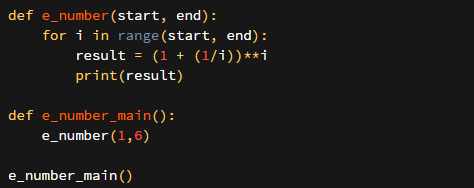
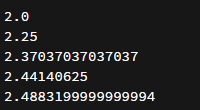

E Sayısının Hesaplanması
E Sayısını Tanıyalım
E sayısı ünlü bir irrasyonel sayıdır ve matematiğin en önemli sayılarındandır. E sayısı, ilk olarak İskoç Matematikçi John Napier tarafından ortaya atılmıştır. Napier, E sayısını 1618 yılında yayınladığı logaritmalar kitabının ekinde yayınlamıştır. Esasen dolaylı olarak bir değinme olmuş. E sayısının keşfi ise kitabın yayınlandığı tarihten çok daha sonraları gerçekleşmiş. Jakob Bernoulli 1683 yılında birleşik faiz problemini incelerken e sayıını keşfetmiş. Bu öyle bir sayı ki bir sürü kişi uğraşmış ama bu sayıya adını Leonhard Euler vermiştir. E sayısı adını 1731 yılında almıştır. Euler sayısı, “Oiler” olarak telafuz ediliyormuş.
E sayısı aynı zamanda Doğal Logaritmanın da tabanını oluşturur. E sayısı ilginç noktalarda karşınıza çıkabileceği için öğrenmeye değer diye düşünüyorum.
Bu kadar vikipedia yeterli sanırım.
E Sayısı
Aşağıda e sayısının ilk birkaç basamağı vardır.
e = 2,7182818284590452353602874713527
E sayısı aşağıdaki gibi bir tanımla hesaplanabilir.
e = 1 + (1/n)^n
E sayısının grafiği şöyledir:

Daha farklı olarak faktoriyel kullanılarak da hesaplanabilir. Aslında en güzel yöntemi bu gibi geliyor bana.
1+1/1! + 1/2! + 1/3!.. şeklinde giden bir hesaplama furyası var.
E Sayısının Programlamada Gösterimi
E sayısının python ile çalışan hali ise aşağıdadır. Başlangıç ve bitiş değerini kullanıcının vereceği varsayılırsa (1,6) gibi bir değer ile deneme yapalım.

Sonuç olarak şu doğruları bize veriyor.

Comments
Comments powered by Disqus